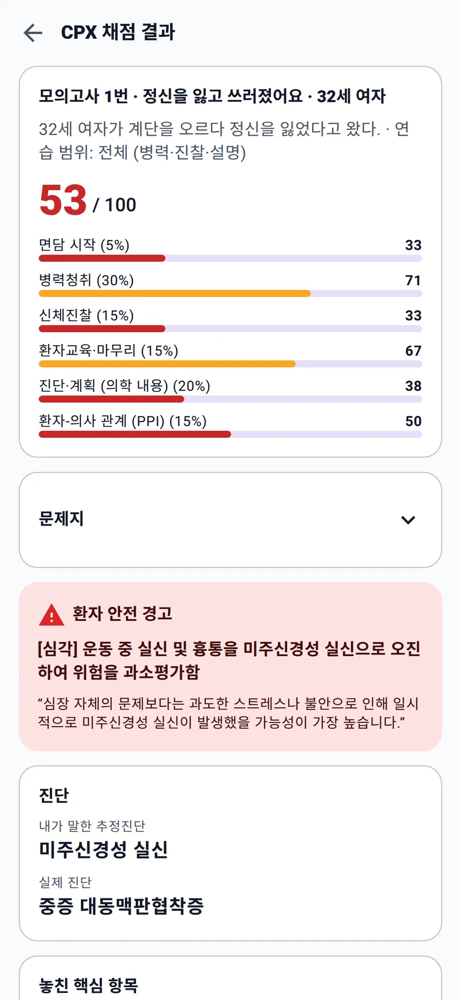
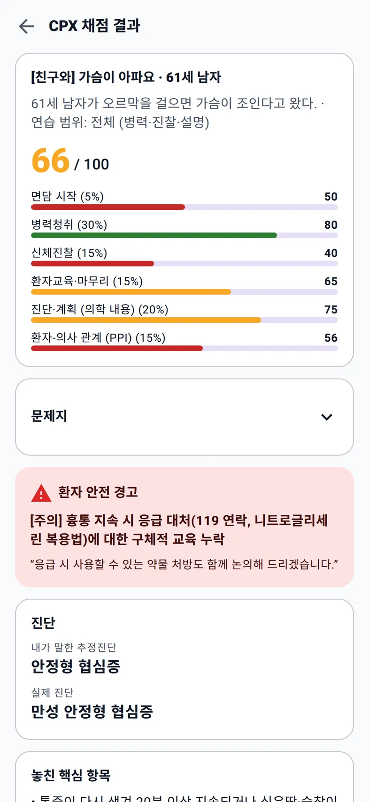
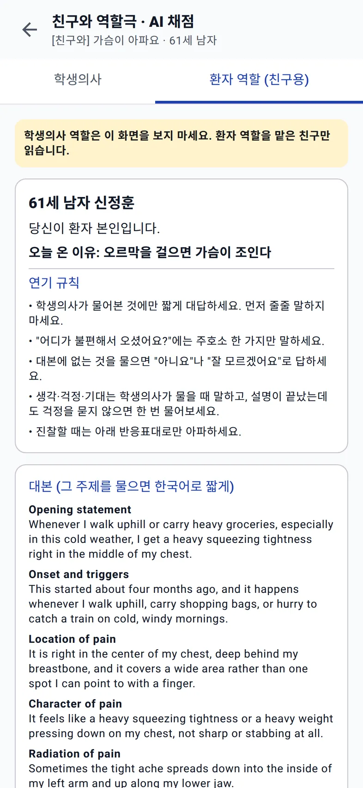
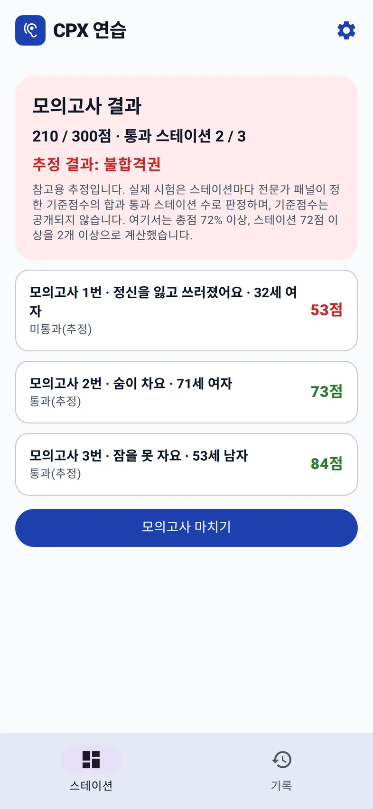

카페인과 갑상샘까지 물었는데, 판막을 놓쳤다
58/ 100 · 병력청취 70 · 진단·계획 38
- 내가 말한 진단
- 말하지 않음 (갑상샘·부정맥만 언급)
- 실제 진단
- 대동맥판막 폐쇄부전증
- 결과표가 짚은 것
- 혈압 146/52의 넓은 맥압, 이완기 잡음, 도약맥. 진찰하지 않은 항목의 소견까지 공개된다.

의사 국가시험 실기 · CPX 진료문항
문제지를 읽고 입실하면 한국어로 대답하는 AI 표준화 환자가 기다린다. 병력청취, 말로 하는 신체진찰, 설명까지 12분. 나오면 놓친 질문과 다음에 할 말이 적힌 결과표가 남는다.


책으로는 무엇을 물어야 하는지 안다. 12분 안에 실제로 묻는 연습은 상대가 있어야 된다.
스터디 친구가 없는 밤에도, 같은 증상을 열 번째 돌 때도, 환자는 대본대로 대답하고 채점은 같은 기준으로 한다.
한 스테이션, 다섯 단계
단계를 누르면 그 화면이 보인다.
48개 임상표현 중 하나를 고르면 2026년 형식 문제지가 뜬다. 이름과 나이, 활력징후, 과제만 있고 주호소는 없다. 범위를 전체, 병력청취+신체진찰, 병력청취만 중에서 고른다.
입실하면 상단에 "CPX · 경과 시간 / 12:00"이 흐른다. 말로 해도 되고 타이핑해도 된다. 환자는 물은 것에만 대답하고, 걱정과 질문은 스스로 꺼낸다. 2분 전에는 시계가 노랗게 바뀐다.
"손을 앞으로 뻗어 보시겠어요? 손떨림이 있는지 보겠습니다." 진찰을 말하면 환자가 그에 맞게 반응하고, 상단의 '문제·소견' 숫자가 늘어난다. 연습 모드에서는 그 진찰의 소견을 바로 확인할 수 있다.
면담 시작 5%, 병력청취 30%, 신체진찰 15%, 환자교육·마무리 15%, 진단·계획 20%, PPI 15%. 영역별 점수와 함께 내가 말한 추정진단과 실제 진단이 나란히 나온다.
항목마다 수행 · 부분 · 누락. 수행한 항목에는 근거가 된 내 말이, 누락한 항목에는 "예:"로 시작하는 바로 쓸 문장이 붙는다. 채점이 틀렸으면 직접 고치고 점수를 다시 계산한다.
결과표 예시
시연용으로 진행한 세 번의 진료와 그 결과표다. 셋 다 그럴듯하게 진료했지만, 결과표는 무엇을 놓쳤는지 짚었다.
[심각] 운동 중 실신 및 흉통을 미주신경성 실신으로 오진하여 위험을 과소평가함
모의고사 3개 스테이션 결과 보기 →
[주의] 흉통 지속 시 응급 대처(119 연락, 니트로글리세린 복용법)에 대한 구체적 교육 누락
역할극으로 녹음·채점하는 법 →
결과표가 남기는 것
놓친 항목마다 바로 쓸 문장이 붙고, PPI 6개 영역은 우수·보통 같은 등급과 한 줄 이유로 나온다. 다음 입실에서 그 문장이 먼저 나오게 만드는 것이 목표다.


혼자, 둘이, 시험처럼

48개 임상표현, 1,100개 넘는 증례. 같은 증상을 골라도 환자가 바뀐다.
한 스테이션 따라가기 →
친구는 환자 대본을 보고 연기, 휴대폰은 녹음. 화자를 나눠 받아쓰고 같은 기준으로 채점한다.
역할극 연습법 →
9개 또는 3개 방 연속, 12분 자동 종료, 힌트 없음. 결과와 추정 합격선은 마지막에.
모의고사 결과 보기 →
임상표현마다 감별 범주, ★ 필수 질문, 그대로 말할 문장, 검사·치료 핵심.
API 키 없이 사용
공부 노트 보기 →
봉합, 심폐소생술, 채혈 등 9개 술기. 단계별 체크리스트와 12분 셀프 체크.
API 키 없이 사용
술기 체크리스트 →AI 환자와 채점은 본인이 Google AI Studio에서 만든 무료 Gemini API 키로 동작한다. 카드 등록 없이 받을 수 있고, 첫 화면이 발급 과정을 안내한다. 키 없이도 공부하기와 술기 체크리스트는 바로 쓸 수 있다.
입실 전에
아닙니다. 국시원의 채점표와 배점은 공개되지 않습니다. 앱의 체크리스트는 공개된 시험 안내(문제지 양식, 환자-의사 관계 평가 영역, 임상표현 목록)를 참고해 만든 연습용 기준이고, 학교나 실제 시험과 다를 수 있습니다. 채점이 틀렸다고 생각하면 항목을 직접 고칠 수 있습니다.
네. 웹 앱이라 아이폰·아이패드 Safari, PC의 Chrome·Edge, 안드로이드 Chrome에서 주소만 열면 됩니다. 홈 화면에 추가하면 앱처럼 전체 화면으로 열립니다.
네. 앱은 무료이고 광고와 구독이 없습니다. AI 기능은 본인의 Gemini API 키로 동작하며, 무료 등급 키는 카드 등록 없이 발급됩니다. 무료 등급에서는 Google이 대화 내용을 서비스 개선에 쓸 수 있으니 실제 환자 정보나 개인 정보는 말하지 마세요. 사용량이 몰리면 Google 쪽 한도 때문에 채점이 늦어질 수 있고, 그때는 저장된 대화를 나중에 다시 채점하면 됩니다.
말로 진행합니다. 어떤 진찰을 하겠다고 말하면 환자가 대본대로 반응하고, 연습 모드에서는 그 진찰의 소견이 표시됩니다. 손의 위치나 기법은 평가하지 못합니다. 손기술이 필요한 기본진료술기 9개는 단계별 체크리스트와 12분 타이머로 스스로 점검합니다.
네. 6개 영역을 우수·보통 같은 등급과 한 줄 이유로 평가하고, 바꿔 말하면 좋을 문장을 상황별로 보여 줍니다. 다만 대화 기록만 보고 추정하므로 말투·표정·시선은 반영되지 않습니다.
쓰는 브라우저 안에만 저장됩니다. 계정이 없어서 다른 기기와 자동으로 동기화되지 않습니다. 음성 진료 중에 화면을 잠그거나 다른 앱으로 가면 대화가 일시정지되니, 12분 동안은 화면을 켜 두세요.
증상 하나를 골라 12분. 놓친 질문은 결과표에 남고, 다음 입실에서는 그 문장이 먼저 나온다.